Project 3: Flow Matching
Overview
Throughouyt this project, we explore how flow models are used to generate images and alter existing ones, diving into the machine learning principles and techniques that make them work. The project is divided into two parts with Part A focusing on principles of image generation using a pretrained model, while part B focuses on creating a flow model from scratch to be used on the MNIST dataset.
Part A: Exploring the Power of Flow Models
All of Part A uses the pretrained model was used with all principles learned from class. No training was needed. For Sections 1.1–1.5 I used a photo of a dog, named Buttercup, peeking out of a bag.
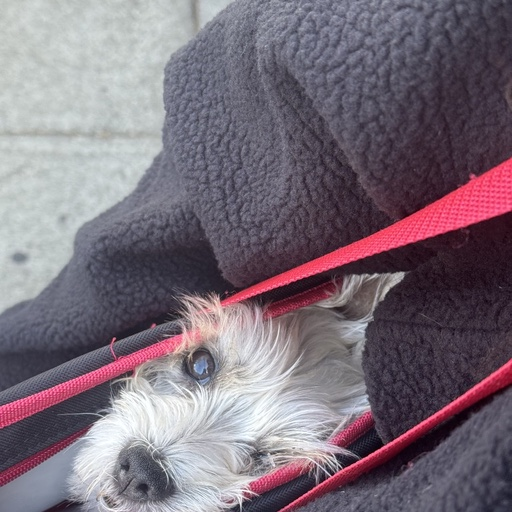
Part A 1.1: Constructing Noisy Training Inputs
The forward process linearly interpolates between noise and a clean image. The same noise sample was reused for
t = 0.25, 0.50, 0.75, and checked that t = 0 returns the noise
exactly and t = 1 returns the image exactly.
def interpolate(image, noise, t):
return noise * (1 - t) + image * t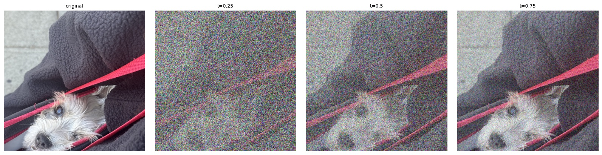
At t = 0.25 the image is mostly noise and only the bright red strap and the rough shape of the dog
are visible. By t = 0.75 the fleece texture and the dog's face are clearly recognizable.
Part A 1.2: Classical Denoising
To see how basic denoising worked on the set, I swept over the blurred images with the following values of
σ = 1, 2, 4, 8, 16 and kept the result with the lowest MSE to the clean image for each t.
for t, x in noisy.items():
candidates = {s: gaussian_blur(x/t, [int(6*s+1)]*2, [s,s]) for s in [1.,2.,4.,8.,16.]}
sigma = min(candidates, key=lambda s: ((candidates[s]-image)**2).mean().item())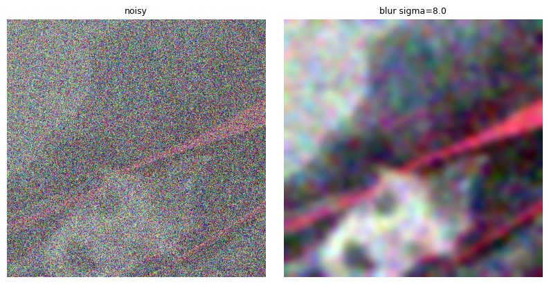
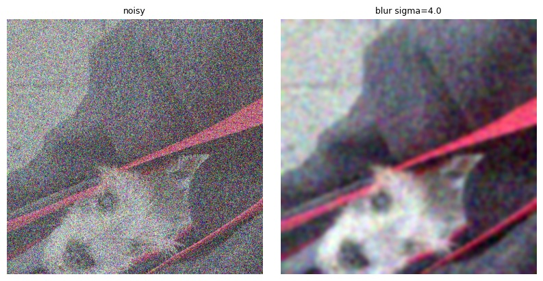
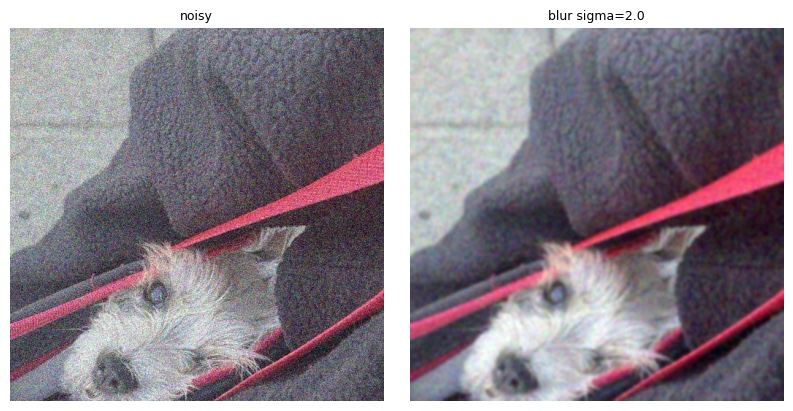
In general, noisier images required more blurring in order to reduce the effects of noise while preserving the features.
Part A 1.3: One-Step Denoising
Since the model predicts the velocity x1 - ε, we then moved on to doing one-step denoising
using the velocity vector, according to the interpolation convention we established in class.
def one_step_denoise(x, t, condition, predict_velocity):
return x + (1-t)*predict_velocity(x, t, condition)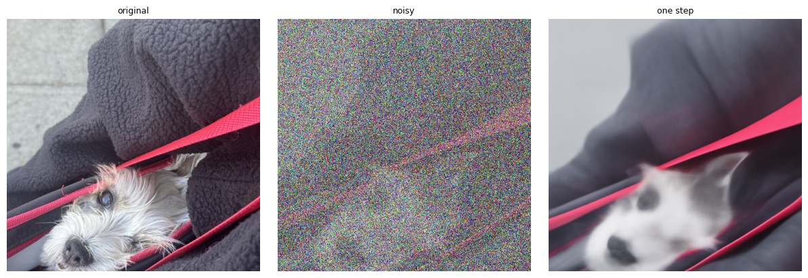
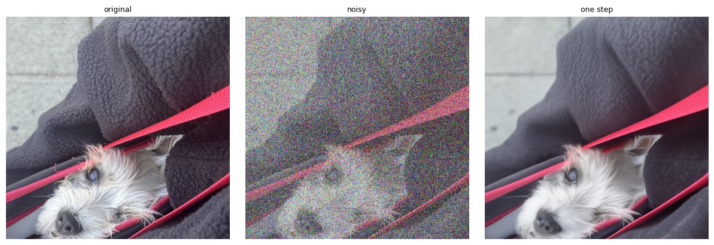
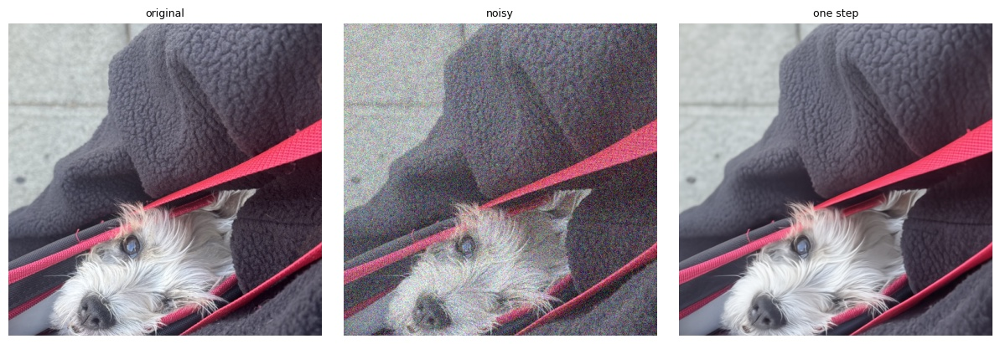
The one-step estimate is far better than the Gaussian blur. Even at t = 0.25, where the input looks
like pure noise, the model recovers the layout: the dark fleece, the red strap, and a white dog. While there is
some blurring of the hairs on the dog, the overall image features are reconstructed successfully. Additionally,
larger values of t result in sharper images, as the input is less noisy and the model has more information to work with.
Part A 1.4: Visualizing Velocity
To see what the model actually adds in each update, the velcity is visualized as the predicted update
(1 - t)v̂ with the ground-truth update (1 - t)vgt = x1 - xt
that would perfectly recover the original. These values were then put into an error map that is displayed below.
def velocity_diagnostics(x_t, t, clean_image, epsilon, condition, predict_velocity):
v_hat = predict_velocity(x_t, t, condition)
v_gt = clean_image - epsilon
predicted_update = (1 - t) * v_hat
target_update = (1 - t) * v_gt
error_map = ((predicted_update - target_update) ** 2).mean(dim=1).sqrt()
return predicted_update, target_update, error_map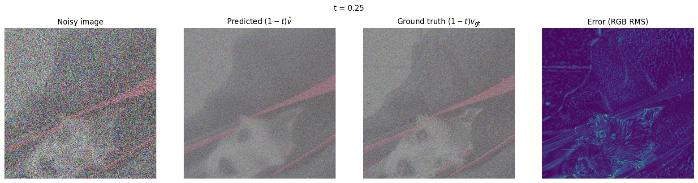
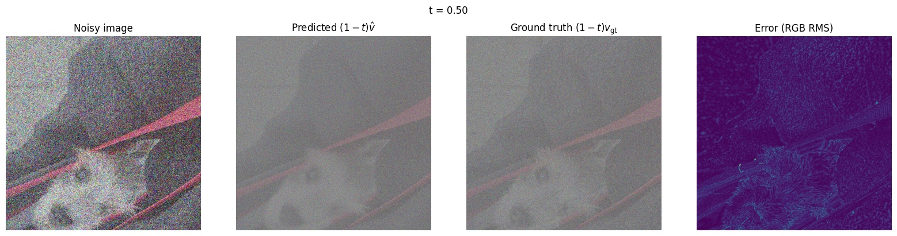
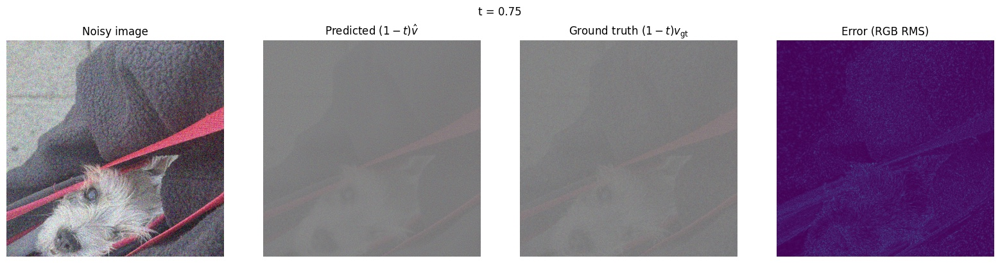
The predicted and ground-truth updates look very similar. However, the amount of error associated with the high frequency features is noticable, as seen in the error maps. This effect is further magnified when t is small.
Part A 1.5: Iterative Denoising with Euler Sampling
Instead of jumping to the end in one step, Euler sampling takes many small steps
xt+h = xt + h · v(xt, t), re-predicting the velocity each time.
The final step is shortened if needed so t lands exactly on 1.
def euler_sample(x_start, t_start, step_size, velocity, eps=1e-6):
x = x_start
t = t_start
states = [(t, x)]
n = 0
while t < 1 - eps:
h = min(step_size, 1 - t)
x = x + h * velocity(x, t)
n += 1
t = min(1.0, t_start + n * step_size)
if n%5==0:
states.append((t, x))
if n%5 != 0 :
states.append((t,x))
return x, statesStarting from the t = 0.50 noisy image, I ran 25 updates with h = 0.02, saving every fifth
state:
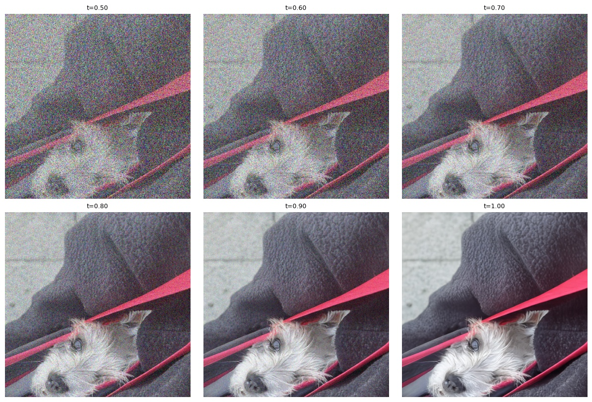
Comparison
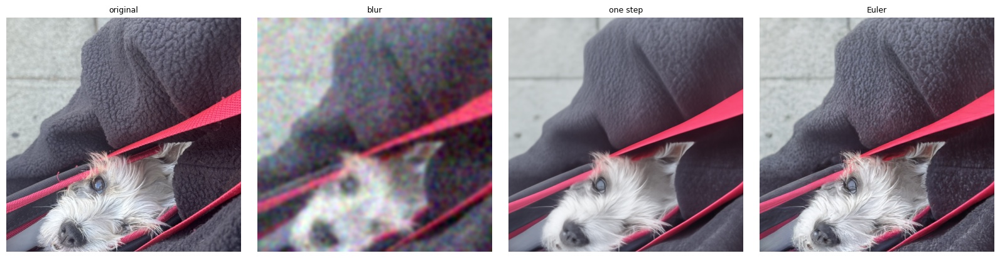
| Method | MSE to original |
|---|---|
| Gaussian blur | 0.0191 |
| One-step | 0.0090 |
| Euler (25 steps) | 0.0113 |
The Euler result looks better by far, with aspects like the fur strands, the fleece texture, and the sidewalk tiles remaining clear. Interestingly, the one-step estimate has a lower MSE even though it is visibly blurrier. The one-step prediction is an average over all plausible clean images, which is exactly what minimizes squared error. Euler sampling instead commits to one specific sharp image, and since the fine details it generates don't match the original pixel-for-pixel, it pays a higher MSE despite looking better.
Part A 1.6: Generating Images from Noise
Starting from pure noise at t = 0 and integrating all the way to t = 1 (50 Euler steps)
with the prompt "a high quality photo" generates brand new images.
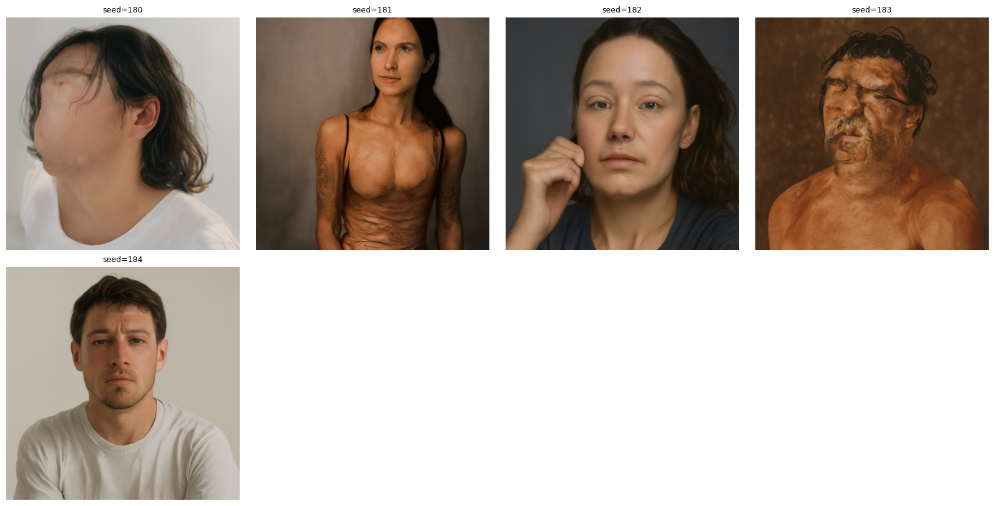
While we do get "new" images, they are all images of people, indicating that the prommpt has a strong preference for realistic portraits. Additionally, there are many artifacts in the images that are undesirable, including deformed faces and skin. We expect this to be fixed with classifier-free guidance, which is explored in the next section. Additionally, we assume that this effect is caused by the way averaging (which is optimized for in the MSE loss) is used to generate the images, which is also explored in the next section.
Part A 2.1: Classifier-Free Guidance
Classifier-free guidance runs the model twice per step, once with the prompt and once with the empty string,
and extrapolates away from the unconditional prediction:
vcfg = vc + w(vc - vu). Both predictions use the same
x and t.
def cfg_velocity(x, t, condition, w, predict_velocity, null_condition=''):
v_cond = predict_velocity(x, t, condition)
v_null = predict_velocity(x, t, null_condition)
return v_cond + w * (v_cond - v_null)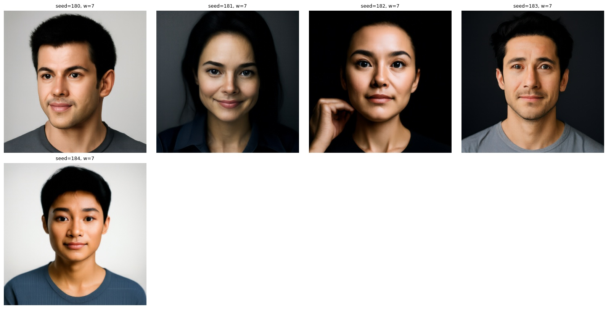
With the same starting noise, CFG fixes the distorted faces from Part A 1.6 and all five images are now clean, well-lit, centered portraits with sharp eyes and hair. However, all images look very similar and look somewhat artificial, indicating that we may need to adjust the guidance weight or explore other techniques to increase diversity and quality.
Part A 3.1: Image-to-Image Editing
To edit an image, I noise it to a starting time tstart and then run the CFG Euler sampler
from there to t = 1 with the prompt "a high quality photo". A small tstart adds
a lot of noise, which gives the model more freedom to change the image. A large one keeps most of the original.
def edit(image, noise, t_start, condition, predict_velocity, w=7, step_size=0.02):
x_start = image * t_start + (1-t_start) * noise
x, states = euler_sample(x_start,
t_start,
step_size,
lambda x,t: cfg_velocity(x, t, condition, w, predict_velocity))
return x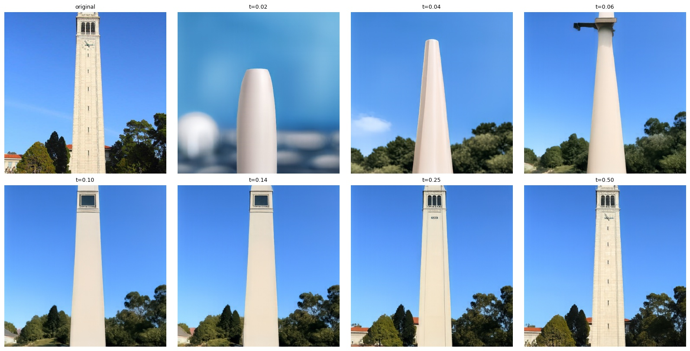
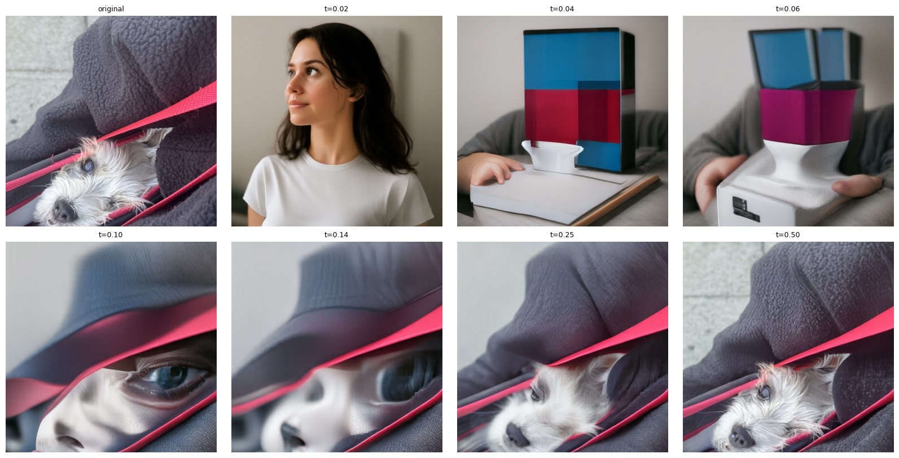
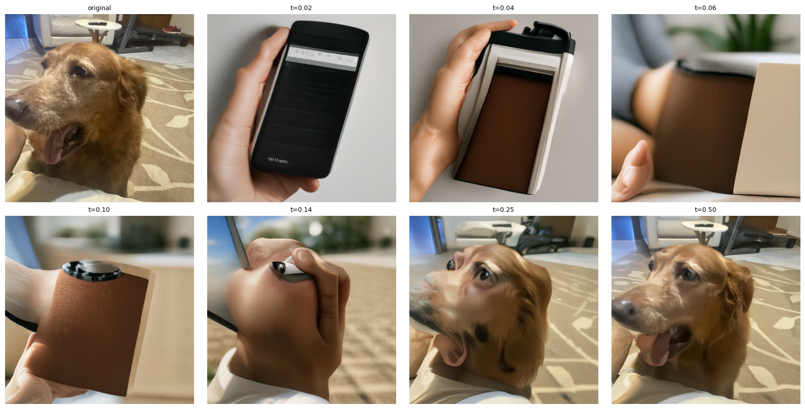
At low t values, only the lowest-frequency features remain, resulting in highly altered images. Meanwhile, at t-values at or above 0.25, the original image's features are mostly preserved, albeit with some minor artifacts like distortion. A good portion of those artifacts are expected to come from the fact that the images that I supplied were likely very out of distribution.
Editing Hand-Drawn and Web Images
The same procedure was done on drawings to illustrate the effect isn't limited to photographs. I used a painting of a unicorn cat from the web and two of my own drawings.
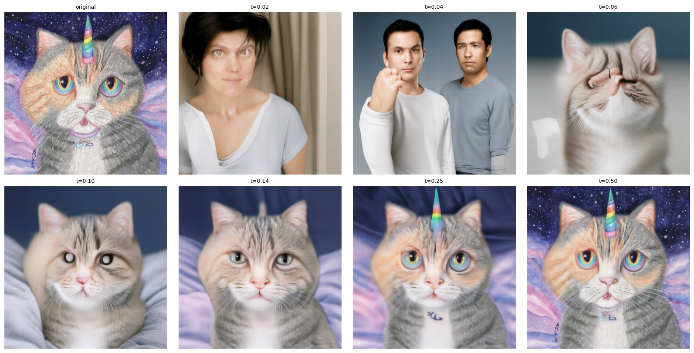
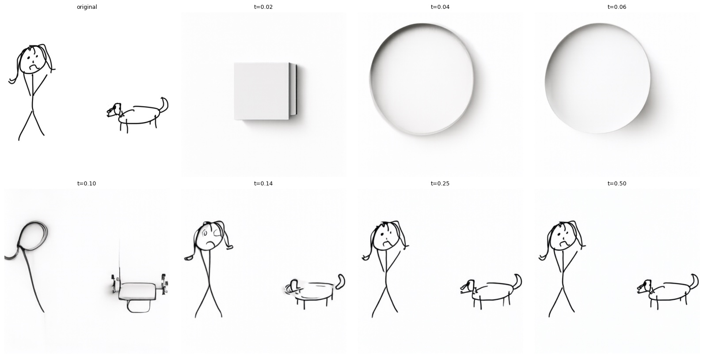
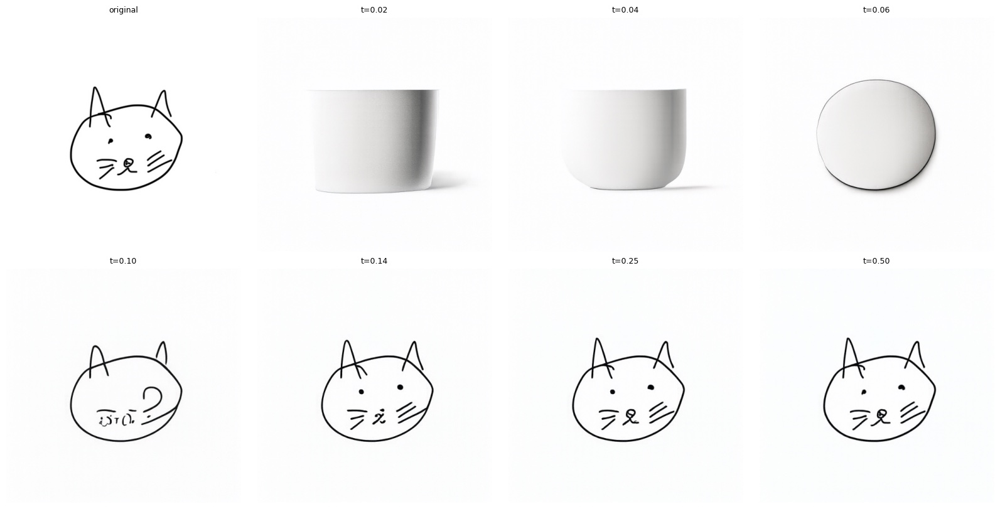
The unicorn cat gives the nicest progression: at t = 0.06–0.14 it turns into a
realistic photo of a gray tabby cat on a purple blanket, keeping the painting's pose and colors, and by 0.25 the
rainbow horn and eyes come back. The drawings were harder. With so much white space, the low starting times turn
them into simple product shots of white objects (a box, a bowl, a plate). By t = 0.14 the model
mostly keeps the sketch as a cleaner line drawing instead of turning it into a photo, since a black-on-white line
drawing is itself already a reasonable "photo".
Part A 3.2: Text-Guided Image Editing
Swapping "a high quality photo" for a custom prompt lets the edit steer the image toward a specific target, while the starting time still controls how much of the original is kept.
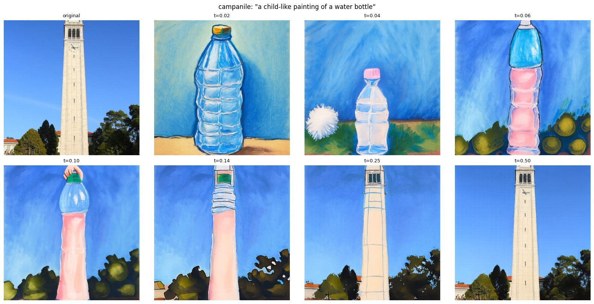

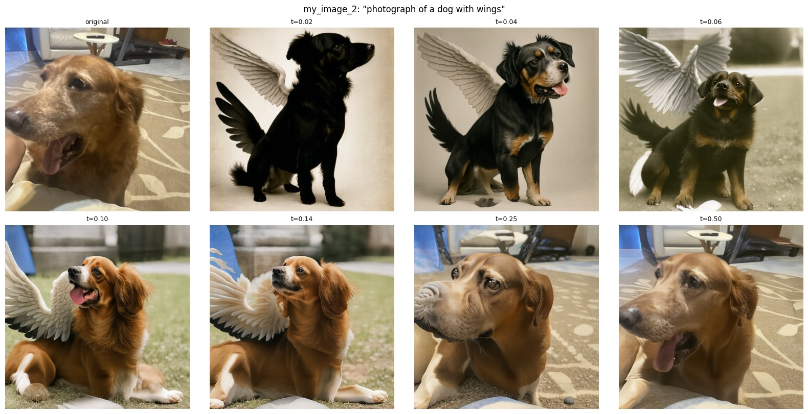
The middle starting times give the best blends of the prompt and the original. The Campanile turns into a tall pink water bottle standing in front of painted trees at 0.10–0.14, and becomes a painted Campanile at 0.25. For Buttercup, 0.10–0.14 keep the diagonal red strap and the dark bag but render them as mosaic tiles with a cat curled up where the dog was. For Joy, 0.10–0.14 produce a golden-brown dog with angel wings that still looks like Joy, while lower times lose her coloring and make a black dog instead.
Part A 3.3: Visual Anagrams
A visual anagram looks like one thing upright and another when rotated 180°. At every Euler step I compute the CFG velocity for prompt A on the image, and the CFG velocity for prompt B on the rotated image, rotate the second one back, and average them. This way, the final image has to satisfy both prompts at once.
def visual_anagrams(noise, condition_a, condition_b, predict_velocity, w=7, step_size=0.02):
def v_fn(x, t):
v_a = cfg_velocity(x, t, condition_a, w, predict_velocity)
v_b = cfg_velocity(rotate180(x), t, condition_b, w, predict_velocity)
return 0.5 * (v_a + rotate180(v_b))
x_final, states = euler_sample(noise, 0.0, step_size, v_fn)
return x_final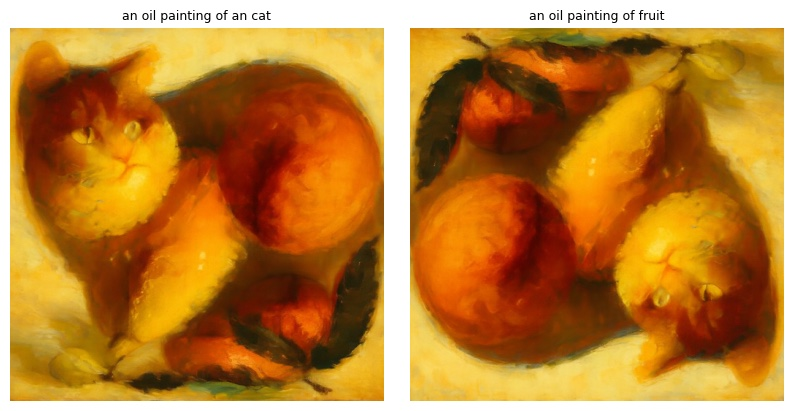
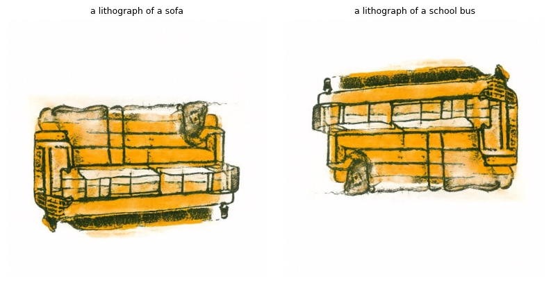
Part A 3.4: Hybrid Images
Hybrid images take the same idea as Project 2's hybrids but apply it to the velocity. At every step I low-pass the
CFG velocity for the "distant" prompt and add the high-pass of the velocity for the "close" prompt. The low-pass
is a Gaussian blur with kernel size 265 and σ = 16.
def make_hybrids(noise, condition_a, condition_b, predict_velocity, w=7, step_size=0.02):
def helper(x, t):
v_a = cfg_velocity(x, t, condition_a, w, predict_velocity)
v_b = cfg_velocity(x, t, condition_b, w, predict_velocity)
return lowpass(v_a) + (v_b - lowpass(v_b))
x, _ = euler_sample(noise, 0.0, step_size, helper)
return x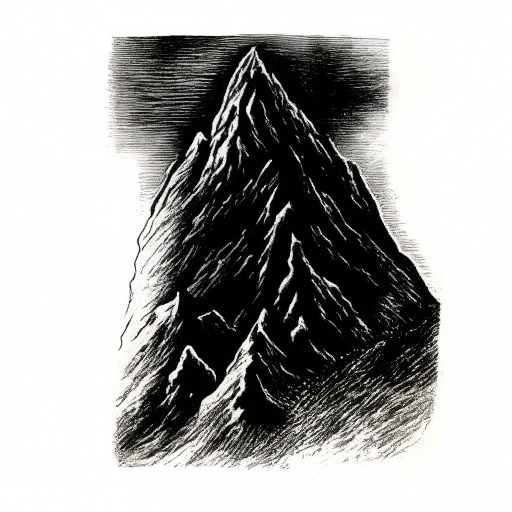
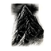
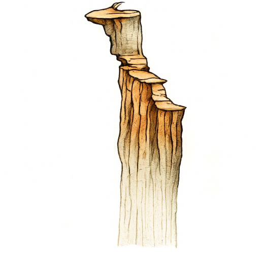
Part B: Flow Matching from Scratch
In Part B, we implemented our own UNET on MNIST. The building blocks for the model were
Conv (3×3 conv → BatchNorm → GELU), DownConv (stride-2 conv),
UpConv (stride-2 transposed conv), Flatten (7×7 average pool → GELU) and
Unflatten (7×7 transposed conv), composed into ConvBlock, DownBlock, and
UpBlock. The UNet downsamples 28 → 14 → 7 → 1, then upsamples back with skip
connections concatenated at every resolution.
def forward(self, x):
x1 = self.conv1(x) # D x 28 x 28
x2 = self.down1(x1) # D x 14 x 14
x3 = self.down2(x2) # 2D x 7 x 7
x4 = self.flatten(x3) # 2D x 1 x 1
x5 = torch.cat([x3, self.unflatten(x4)], dim=1)
x6 = torch.cat([x2, self.up1(x5)], dim=1)
x7 = torch.cat([x1, self.up2(x6)], dim=1)
return self.conv3(self.conv2(x7))Part B 1.2: Using the UNet to Train a Denoiser
The first task is a single-step denoiser, predicting the clean digit
x with an MSE loss. Below is the noising process on one digit for a range of σ.
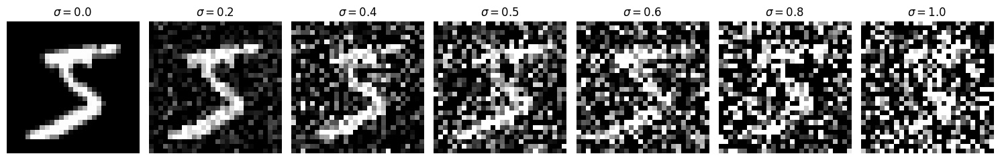
1.2.1 Training
I trained the UNet with hidden dimension D = 128 to denoise σ = 0.5 images for 5
epochs, with batch size 256 and Adam at lr = 1e-4.
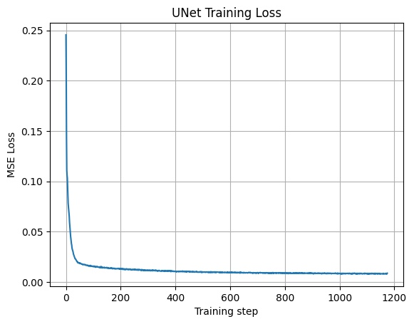
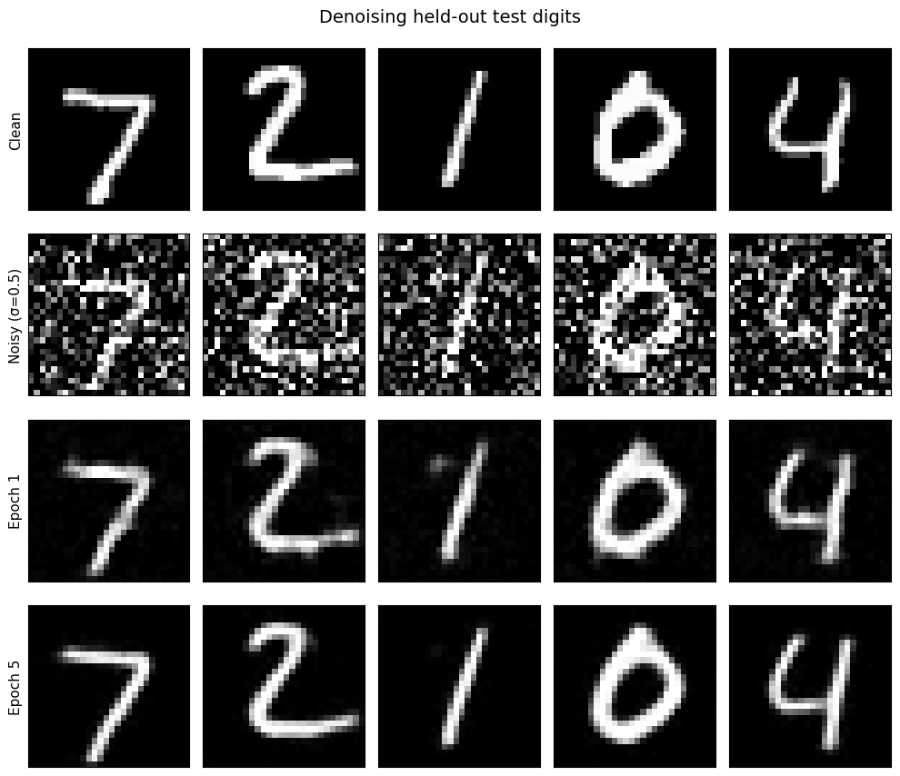
After a single epoch the denoiser already recovers digits pretty well, but the strokes are broad and the image has some artifacts. After 5 epochs the backgrounds are clean and the strokes are thinner and more accurate to the real digits.
1.2.2 Out-of-Distribution Testing
The denoiser was only trained on σ = 0.5. To see how it generalizes, I ran the epoch 5 model on
the same test digit with the same noise sample scaled to different levels.
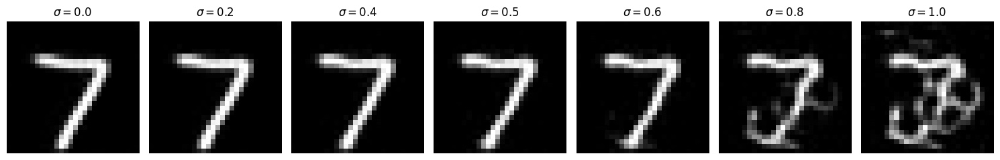
For noise levels at or below the training level the output is a clean 7, so the model handles less noise than it was trained on without trouble. At values above the training level the model breaks down, with tons of artifacts.
1.2.3 Denoising Pure Noise
Next, I trained a fresh D = 128 UNet with the same settings, but with pure Gaussian noise as the input
and a clean digit as the target, which effectively turns the denoiser into a generator.
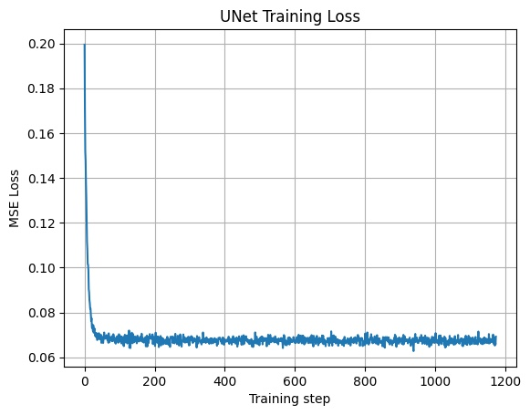
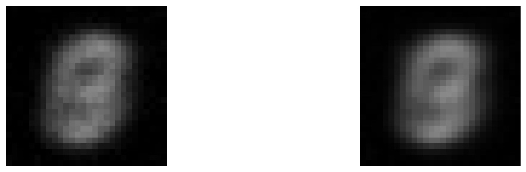
The loss drops quickly and then plateaus around 0.068, far above the 0.01 that the σ = 0.5 denoiser reached. We expect that this occurs because the model is trying to generate the average of the training data, which would minimize the MSE loss function. This achieved early in trianing and therefore causes our plateau.
Part B 2.1: Time-Conditioned UNet
For flow matching, the UNet takes the noisy image xt and the time t and predicts
the velocity x1 - x0. The scalar t is passed through two small
FCBlocks (Linear → GELU → Linear), and their outputs multiply the feature maps after the
Unflatten and the first UpBlock.
t1 = self.time_condition(t.unsqueeze(1))[:, :, None, None]
x5 = torch.cat([x3, self.unflatten(x4) * t1], dim=1)
x6 = self.up1(x5)
t2 = self.time_condition_2(t.unsqueeze(1))[:, :, None, None]
x6 = torch.cat([x2, x6 * t2], dim=1)Training (Algorithm 1) samples a random t ~ U[0, 1] for each image, builds
xt = (1 - t)x0 + t x1, and regresses the velocity. Sampling
(Algorithm 2) starts from noise and takes 50 Euler steps.
x_0 = torch.randn_like(x_1)
t = torch.rand(x_1.shape[0], device=x_1.device)
x_t = (1 - t[:, None, None, None]) * x_0 + t[:, None, None, None] * x_1
loss = torch.mean(((x_1 - x_0) - unet(x_t, t)) ** 2)2.2 Training
I trained with D = 64, batch size 64, Adam with an initial lr = 1e-2, and an exponential
learning rate decay of γ = 0.11/10 per epoch for 10 epochs.
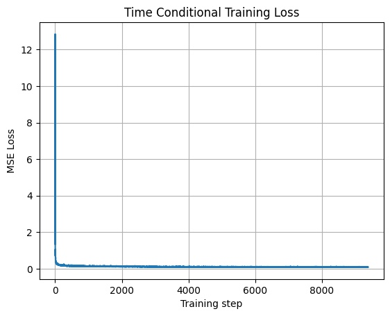
2.3 Sampling
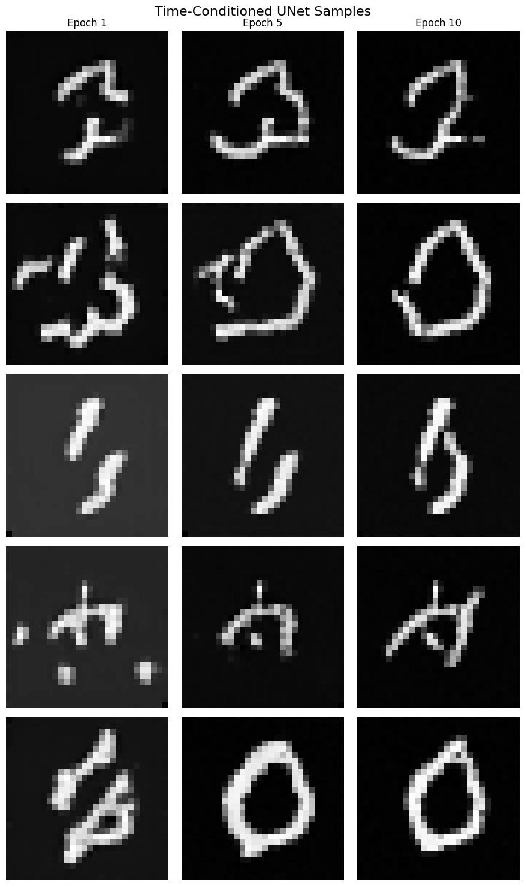
As training progresses, the samples improve in quality significantly; however there are still some artifacts remaining. We expect that this is because of the fact that the model is still not class-dependent, which would allow the model to train towards the specific digit we wish to generate.
Part B 2.4: Class-Conditioned UNet
To control which digit is generated, we added two more FCBlocks that take a one-hot class vector. The class
embedding scales the features and the time embedding shifts them: c · features + t. During
training, the class is dropped (multiplied by a mask of 0) 10% of the time so the same network also learns the
unconditional velocity, which allows for classifier-free guidance with
v = vu + γ(vc - vu) and γ = 5 at sampling time.
c1 = self.class_1(F.one_hot(c, num_classes=10).float())[:, :, None, None]
c1 = c1 * mask[:, None, None, None]
x5 = torch.cat([x3, self.unflatten(x4) * c1 + t1], dim=1)
...
c2 = self.class_2(F.one_hot(c, num_classes=10).float())[:, :, None, None]
c2 = c2 * mask[:, None, None, None]
x6 = torch.cat([x2, x6 * c2 + t2], dim=1)# sampling with CFG (Algorithm 4), 300 Euler steps
for i in range(num_ts):
t = torch.full((x.shape[0],), i / num_ts, device=device)
v_uncond = unet(x, c, t, mask=torch.zeros_like(c, dtype=torch.float32))
v_cond = unet(x, c, t, mask=torch.ones_like(c, dtype=torch.float32))
x = x + dt * (v_uncond + guidance_scale * (v_cond - v_uncond))2.5 Training
Same hyperparameters were used as the time-conditioned model: D = 64, batch size 64, Adam with initial
lr = 1e-2, exponential decay over 10 epochs, and puncond = 0.1.
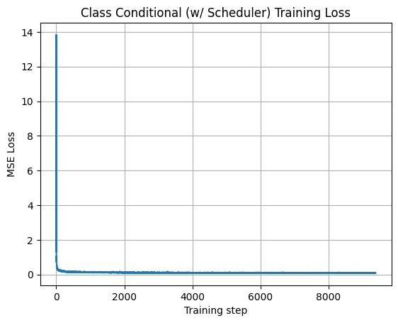
2.6 Sampling
Four samples of each digit (rows 0–9) after epochs 1, 5, and 10, with 300 Euler steps and guidance scale 5.
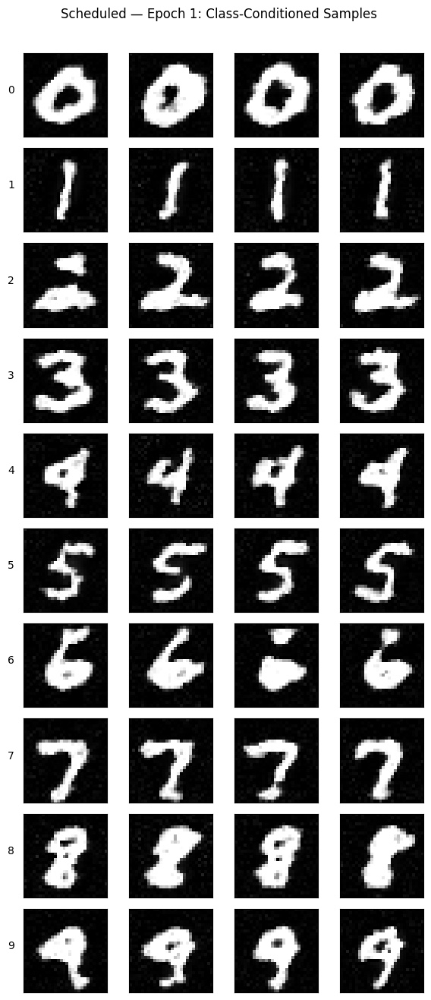
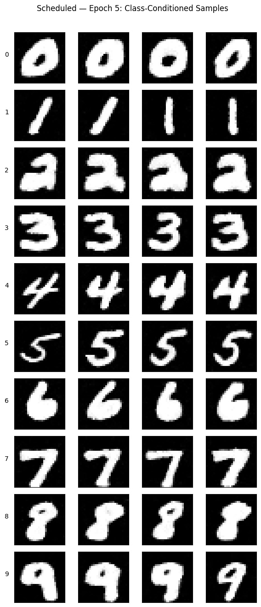
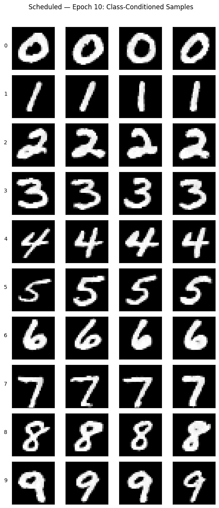
Class conditioning and guidance produced noticably better images than the time-conditioned model. This is as expected, given that the model is able to tighten the output distribution with the class information, and therefore be more consistent and produce better quality digits.
Removing the Learning Rate Scheduler
To remove the exponential scheduler, I trained an independent model with a constant learning rate of 1e-3 instead of starting at 1e-2. This is to see if the scheduler was necessary at all.
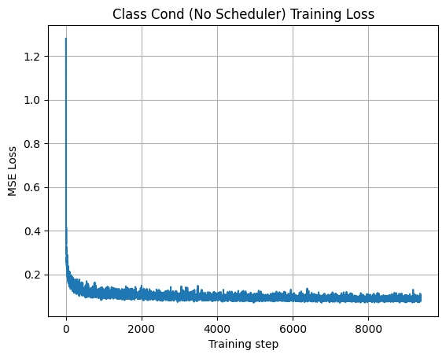
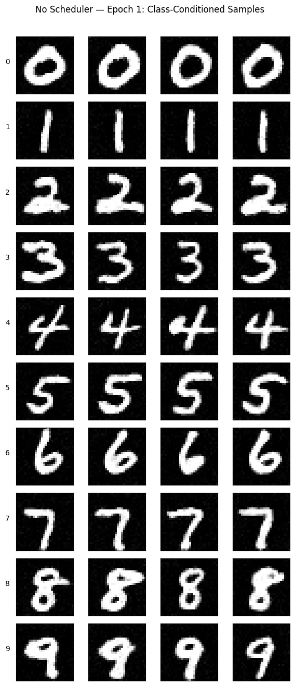
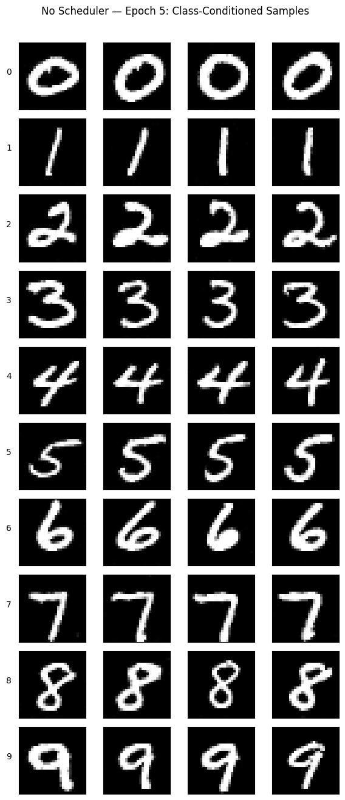
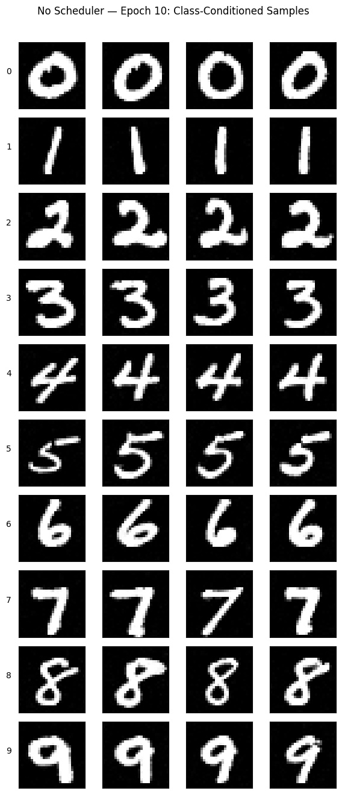
The no-scheduler model reaches very similar quality to the scheduled one by epoch 10, with the slightly reduced learning rate. As a result, we can conclude that the learning rate scheduler was not strictly necessary for this specific task.
Takeaways
Seeing the impact that the different conditioning inputs had on the generated images was paritcularly insightful. Without doing the buildup to the class-conditioned model, I would have intuitively believed that results would be pretty reasonable for the time-conditioned model, but the results were not as good as I expected. Additionally, seeing the relationship that noising levels had on the generated images was also very interesting.